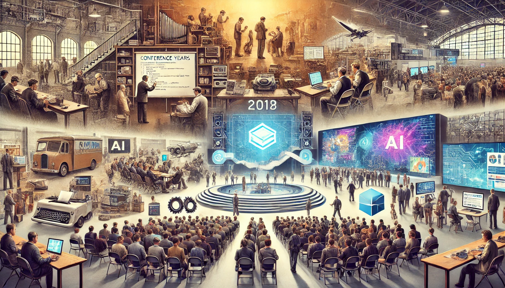

history
TechCon began in 2005 as a small meetup in Silicon Valley for software developers and IT professionals, focusing on programming and hardware. By the 2010s, it expanded its agenda to include mobile development, cloud computing, and cybersecurity, attracting thousands of global attendees. TechCon then went international, hosting events worldwide and covering emerging topics like AI and blockchain. Today, it draws over 50,000 participants annually, featuring panels, workshops, and showcases on cutting-edge technologies. TechCon’s evolution reflects the rapid changes in the tech industry, remaining a key platform for innovation and knowledge sharing.
mission
TechCon's mission is to inspire and empower the global tech community through knowledge exchange, collaboration, and innovation. It aims to unite tech enthusiasts, industry leaders, and entrepreneurs to explore advancements and future trends. The conference values inclusivity, learning, and growth, driving conversations on digital ethics and impactful solutions. TechCon fosters an environment where ideas flourish and connections are made. Its goal is to promote diversity and shape the future of technology.
past speakers
- Dr. Lydia Thompson
Dr. Lydia Thompson is a renowned expert in artificial intelligence and machine learning with over 15 years of experience in the field. She holds a Ph.D. in Computer Science from MIT and has led groundbreaking research at several leading tech firms. Dr. Thompson is known for her innovative work in developing adaptive algorithms for real-time data processing and has published numerous papers on the ethical implications of AI.

Raj Patel is a senior software engineer at Quantum Innovations, where he specializes in blockchain technology and decentralized systems. With a background in both finance and computer science, Raj has been pivotal in creating secure, scalable solutions for digital transactions. His work on smart contracts and distributed ledger technologies has earned him accolades in the tech community.

Emily Chen is a UX/UI designer and product strategist with a focus on creating intuitive user experiences for emerging technologies. She has worked with top tech companies to design user-centered applications and is a frequent speaker on the intersection of design and technology. Emily’s innovative approach to user interface design has been recognized with several industry awards.